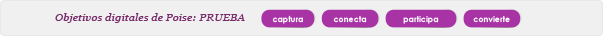
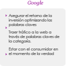

Proceso
Contexto
-

Continuar desarrollando Poise como la marca del bienestar femenino direccionando los síntomas de la menopausia ofreciendo un paraguas de soluciones.
-
Apoyo a todas las plataformas: cuidado intimo, control de calores y perdidas de orina, centrándose en 1 producto héroe por plataforma (jabón, spray refrescante, toalla ultrafina).
-
Generar un equilibrio entre la conexión emocional y la aprobación médica.
-
Acelerar la categoría y la penetración de la marca a través de la prueba de Poise, sobrepasando el 3% de PMP en 2014.
Proceso
Objetivos del Programa Comercial
-
Existe la necesidad de reforzar el posicionamiento de Poise como la marca experta en menopausia con un solo CP reemplazando el de Maduritud & Poise AZ (5 piezas en total).
-
El apalancamiento en los productos héroe para acelerar la penetración es una necesidad.
-
Mensaje claro y directo (educación de síntomas y soluciones) es fundamental para educar, atraer al consumidor y llevarlos a la prueba de producto.
-
El CP de Poise 2014 retará a los consumidores a comparar sus soluciones actuales vs Poise, ofreciendo productos especializados y con un soporte educacional durante esta etapa de la vida.
Fundamentales
Directrices del Equity visual
Plataforma Poise
Fundamentales
Estrategia Digital
Rol del Canal
-

Website
Facebook
Youtube
-
SEO/SEM
Social ads
Display
Video Blog
Blogs, Colummnists

-

Influentials
Fundamentales
Posicionamiento local de la marca
-
Público Objetivo
Para las “Proactive Normalizers” y “Beautiful Optimistic”, mujeres con actitud positiva entre los 45 a 65 años que no quieren dejar que los cambios físicos y hormonales asociados con su etapa de vida comprometan su feminidad.

-
Necesidad Básica
Necesitan ayuda para manejar sus síntomas con soluciones no invasivas.
-
Marca
Poise es la única marca experta en pre y post menopausia
-
Marco de referencia
Va más allá de las actuales soluciones del mercado, como productos médicos o farmacéuticos, soluciones caseras, productos de cuidado femenino y otros sustitutos.
-
Punto de diferencia
Ofrece soluciones que previenen y alivian los síntomas asociados con su etapa de vida, con el fin de mantener su confianza y feminidad.
-
Soporte
Solo Poise ofrece una gama de productos de soluciones femeninas e intuitivas que están diseñadas naturalmente para su cuerpo.
Fundamentales
Historia de la marca
Tu aliada experta para disfrutar lo mejor de esta NUEVA ETAPA
Como mujeres, pasamos por muchas etapas de la vida con grandes cambios como: el síndrome pre-menstrual, la menstruación, el embarazo.
Alrededor de los 45 años entramos a una nueva etapa donde somos más experimentadas y disfrutamos de la vida de una manera distinta. También es una etapa donde nos toca afrontar nuevos cambios hormonales que ocurren durante el climaterio. Esos cambios nos hacen sentir física y emocionalmente diferente, donde además de ser más experimentada hay muchos momentos donde no sabemos cómo reaccionar. Es por eso que buscamos información para resolverlos.
Fundamentales
Historia de la marca
Queremos que las mujeres sepan que hay una marca que las apoya a comprender y manejar los cambios de esta etapa. Poise se ha especializado en las necesidades de las mujeres en el Climaterio,
Es la primera que entiende, cuida y habla sobre sus necesidades físicas y emocionales, para así poder disfrutar lo mejor de esta etapa de la vida.
Poise ofrece una amplia gama de productos femeninos que trabajan intuitiva y naturalmente para aliviar los síntomas asociados al climaterio; y por lo tanto para aliviar los calores repentinos, las perdidas involuntarias de orina, incomodidad en nuestra zona íntima y otros síntomas
Porque si comprendes los cambios que vendrán y cómo solucionarlos estarás preparada y podrás concentrarte en disfrutar lo mejor de cada día, siempre estando segura y femenina.
Poise, tu aliada experta en el Climaterio que te acompaña para disfrutar de esta nueva etapa.
Fundamentales
Perfil de la tarea


Fundamentales
Desafío de Marketing

¿Qué necesitamos hacer?
ILUMINAR Y GENERAR UN MOVIMIENTO
(alrededor de su estilo de vida, síntomas y categoría)

-
Consumidor / cliente / comprador
Educar a nuestros consumidores acerca de esta nueva etapa de la vida , sobre los síntomas que sienten y ofrecerles soluciones para incitarlos a la prueba. Al mismo tiempo, tenemos que fomentar el trade , demostrándoles la oportunidad de generar el aumento de las ventas en esta categoría y persuadirlos para incorporarlo en su canal.
-
Categoría, marca y producto
Como planificador en la categoría. Poise debe generar impacto y crear entusiasmo, educar a los consumidores sobre los síntomas y soluciones y normalizar la condición para los consumidores y para la sociedad.
-
¿Qué es el MOVIMIENTO?
En la primera etapa, el movimiento es una respuesta a esos cambios de la vida, educando a los consumidores y llevándolos nuevamente a una condición normal proporcionándoles soluciones. Más allá de esta experiencia, el movimiento les muestra cómo estar listo para el mundo, intercambiando experiencias con otros y generando un cambio en la sociedad.
Fundamentales
Directrices del Equity visual
Directrices de la marca
Reglas de logotipo
El logo Poise® existe en forma de letras únicamente cuando es usado como Marca. El logo con “Escudo” fue creado para empaques. Para lograr aplicaciones globales consistentes, el logotipo en forma de letras y el logo con escudo, no deben ser alterados.
Logo principal, recomendado para ser utilizado en todas las comunicaciones de marca.
Logo Secundaria, utilizado en la comunicación escrita, o cuando no se puede utilizar el logotipo principal
Fundamentales
Directrices del Equity visual
Directrices de la marca
Reglas de logotipo

No estirar o distorsionar el logotipo

Nunca cambie los colores
Nunca altere la forma Poise®

Sólo se debe utilizar en los colores de la marca
No estirar o distorsionar el logotipo

Nunca cambiar el color

Nunca cambiar las formas de las letras
Nunca deconstruir el logotipo
Sólo se deben utilizar en los colores de la marca
Fundamentales
Directrices del Equity visual
Directrices de la marca
Reglas de logotipo
El color ayuda a definir la primera impresión visual de los consumidores de la marca.
Gama de colores de la marca es intuitivamente femenina y apropiada para la edad.
-
Degradé
C17 M100 Y7 K3
C25 M100 Y3 K57
-
Color

C21 M100 Y5 K30
Fundamentales
Directrices del Equity visual
Directrices de la marca
Activos de la marca: la tipografía
La tipografía juega un papel vital en el manejo de la marca. Se debe tener en cuenta que la tipografía desempeña un papel de apoyo en la entrega de una comunicación clara y sin quitarle protagonismo al logotipo.
La tipografía que se usa para el logo Poise no es una tipografía regular, esta fue creada para la marca.
Poise does not use the word typography, text is created.

Fundamentales
Directrices del Equity visual
Directrices de la marca
Activos de la marca - Patrones
El patrón de ondas proporciona un movimiento que fluye naturalmente y que tiene estilo y gracia ... al igual que nuestra Beautiful optimistic. El elemento visual se puede utilizar en cada punto de contacto para añadir profundidad y capas de color, la fotografía o la estética del producto.
-
Patrón de las ondas
Se puede utilizar para crear un contexto textual
-
Ondas sutiles
Puede ser sobrepuesto en la fotografía
Fundamentales
Directrices del Equity visual
El estilo de vida de la fotografía
- Estilos generales de la fotografía:

Fotografías a color
Se muestra en un medio ambiente (interior y exterior)
Captura un momento en el tiempo (editorial en estilo, no por etapas)
- Tipo de mujer:
"Las mujeres de verdad" no demasiado estilizadas
Todas las formas y tamaños
Edad de aspiración + 45 años
Etnia regionalmente relevante
- Papel de la mujer:
Ella puede estar en varios escenarios
Cuando está sola, ella puede mirar directamente a la cámara (comprometido con el lector) o mirar a sus alrededores (interactuando con su entorno)
En los entornos sociales con las diferentes personas en su vida
Haciendo una variedad de actividades para mostrar lo multifacética que es su vida (actividades no pueden ser demasiado agotadoras)
Las emociones siempre deben transmitir felicidad y confianza
Fundamentales
Directrices del Equity visual
Lo que no está permitido en el estilo de la fotografía

Fundamentales
Directrices del Equity visual
Directrices de la marca
Imagen de Experta y respaldo médico
Frase de la marca
Para reforzar su posicionamiento es importante incluir "Marca Experta en el Climaterio" en todas las comunicaciones.
Respaldo Médico
El logotipo Flascym para ser utilizado en empaques y POP
Fundamentales
Estrategia de Distribución
Donde / Porqué -
Canales de Venta Estratégicos
El canal moderno y el canal farma, son los canales clave para la categoría.
-

El canal farma es considerado un canal especializado para productos de salud e higiene.
-
El comprador percibe que en el canal farma hay un servicio más profesional y personalizado donde las preocupaciones se resuelven con el asesoramiento de expertos.
-
Supermercados son considerados el mejor canal para el abastecimiento.
-
Los supermercados permiten comprar sus productos de una manera más independiente.
El canal moderno y el canal farma, son los canales clave para la categoría.
-
El canal farma es considerado un canal especializado para productos de salud e higiene.
-
El comprador percibe que en el canal farma hay un servicio más profesional y personalizado donde las preocupaciones se resuelven con el asesoramiento de expertos.
-
Supermercados son considerados el mejor canal para el abastecimiento.
-
Los supermercados permiten comprar sus productos de una manera más independiente.
Fundamentales
Estrategia de Distribución
Cómo ganar en el canal moderno y farma
-
Distribución
Atención y control en clientes potenciales para crecimiento continuo en ventas
-
Precios
Centrarse en añadir valor a la compra del consumidor en vez de reducir los precios, aumentando las ventas y generando lealtad.
-
Exhibiciones y merchandising
Varias farmacias y tiendas de supermercado requieren diferentes actividades de exhibiciones y merchandising, con el fin de generar recordación de las marcas de KC.
Rol clave para el canal farma:
Respaldo profesional
El posicionamiento de la farmacia basada en el asesoramiento de los consumidores y el apoyo. En Argentina, los dependientes son capacitados por los proveedores para asesorar.
Fundamentales
Estrategia de Distribución
Cómo / Principios claves
-
Un bloque de marca es un amplificador de conocimiento y crecimiento de ventas, ya que genera una mejor visibilidad, conocimiento de marca y crecimiento de ventas a través de capitalizar en los síntomas.
-
Visibilidad en la góndola es fundamental y debe ser visto a través del POP, bloque de marca y exhibidores.
-
Punto de venta es clave para sorprender con nuevas noticias y atrapar al consumidor.
-
POP diferenciador para mejorar la visibilidad de la marca y resaltar el posicionamiento de esta.
-
La Codificación completa del portafolio y la exhibición es fundamental para promover el posicionamiento de marca y también para incrementar las ventas en toda la línea de productos, debido a la superposición de síntomas.
-
Direccionar la educación y la prueba en el punto de venta puede ser efectivo con el acercamiento adecuado, que incluye empaque y sistema de entrega.
-
Muestreo / muestreo cruzado entre el portafolio es vital para acelerar la prueba desde el lanzamiento.
-
Impulsadoras son muy efectivas informando y generando prueba. Debemos ser selectivos con su perfil, ellas deben ser empáticas en su acercamiento.
-
Ganando aceptación por parte de los comerciantes minoristas contribuirá a impulsar la ubicación del portafolio y material POP fuera de la góndola.
Fundamentales
Estrategia de Distribución
Ejemplos de exhibiciones
Control de calores
Cuidado íntimo
Pérdidas de orina
Fundamentales
Estrategia de Distribución
Fundamentales
Estrategia de Precios
La estrategia de precios Poise debe estar alineado con su posicionamiento:
Una marca única, experta en pre y post menopausia.
Un precio correcto ayuda a construir el posicionamiento de la marca.
Estrategia de Precios: precio premium vs protección femenina y garantizando el objetivo de GP:
Fundamentales
Estrategia de Precios Inco
Fundamentales
Estrategia de Precios Inco

Fundamentales
Estrategia Digital
4 Digital Bigs for the BIG BRAND BANG!
-
captura
Capturaatención y dirige al usuario a la marca-online
Trabajar la “encontrabilidad” en las búsquedas online. Incentivar búsquedas orgánicas. Se trabajan acciones en medios para OBTENER VISITAS-CONOCIMIENTO DE MARCA y sus plataformas/ comunicación. -
conecta
Conecta
Desarrollar y Proveer activos de marca amigables con contenido relevante y disruptivo. Obtener data del consumidor y establecer una conexión del consumidor con la marca. -
participa
Participación Activa
Proporcionar Landings/Webs/aplicativos amigables, Contenido relevante, Información actual y diferente. Usar formatos disruptivos & creativos como videos online, testimoniales, animaciones,etc.. Obtenemos DATA DE USUARIO. -
convierte
Convierte y Gana!
Buscamos que los objetivos se cumplan y las acciones digitales generen un retorno, por lo cual en esta etapa buscamos: Registros, Trial, Ventas, Embajadores de Marca, así como trabajar acciones de CRM para retener al consumidor.
Fundamentales
Estrategia Digital
Always On Diseño de plataforma
- 
- 
Fundamentales
Estrategia Digital
Rol del Canal
-
Website
Facebook
Youtube
-
SEO/SEM
Social ads
Display
Video Blog
Blogs, Colummnists
-
Influentials
Fundamentales
Estrategia Digital
Estrategia de Canal Digital
-
- Establecer la web de Poise para obtener orientación e información pertinente a los síntomas y soluciones específicas.
- Proporcionar orientación y evaluación sobre la menopausia.
- Facilitar la interacción con la propuesta de marca y la línea de productos a través de los niveles más profundos de compromiso
- Generar prueba de producto
-
- Generar prueba de producto
- Establecer credenciales y conexiones emocionales en los síntomas de la menopausia
- Construir comunidad y promoción a través de la conducción 1-a-1 y conversaciones-1-a-muchos
-
- Asegurar retorno de la inversión en la optimización para la palabra clave
- Traer tráfico a la web, relacionando la búsqueda de Google con la palabra clave relacionada a nuestra categoría
- Estar en el momento cero de la verdad de los consumidores.
-
- Educar y enfocarse en el target con videos, tutoriales y comerciales acerca de los productos Poise.
- Animar a las mujeres a compartir experiencias y enseñar a otras mujeres
- Utilizar expertos para llevar a la marca más cerca de las mujeres, a través de contenido integral.
-
- Adquirir a los consumidores Yesmale (base de datos de comercio electrónico/ sitio web)
- Familiarizar a nuestro target con la línea completa de productos.
- Generar compra y re-compra.
Ecosistema de Poise Digital